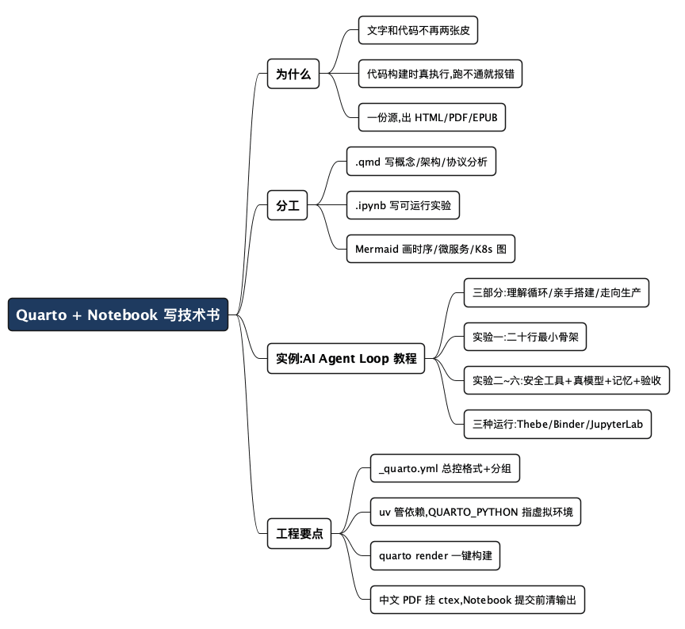

用 Quarto + Notebook 写一本"能跑起来"的技术书
Posted on 一 20 7月 2026 in Tech
| Abstract | 用 Quarto + Notebook 写一本"能跑起来"的技术书 |
|---|---|
| Authors | Walter Fan |
| Category | Tech |
| Status | v1.0 |
| Updated | 2026-07-20 |
| License | CC-BY-NC-ND 4.0 |
用 Quarto + Notebook 写一本"能跑起来"的技术书
写技术教程，我踩过一个反复出现的坑：文字和代码是两张皮。
Markdown 里写"这里调用一下 JWT 解析，你会看到三段 Base64"，写得挺利索。可等我半年后自己回头照着敲，环境变了、库升级了，代码跑不通了，文字还理直气壮地站在那儿。读者更惨——他照着抄，报错一堆，只能默默关掉页面。文字会撒谎，代码不会。
所以我一直想要这么个东西：概念用文字写，实验用能跑的代码写，两者放在同一份源文件里，构建时代码真的执行一遍，结果直接嵌进文档。 跑不通就构建失败，谁也别想蒙混过关。顺便还能一键生成在线网站、PDF 和 EPUB——毕竟笔记攒多了，总想哪天整理成册。
这套组合我试下来是 Quarto + Jupyter Notebook。这篇就用一个"AI Agent Loop 入门小教程"当实例，从零把它搭起来。看完你能带走一套可以直接抄的工程骨架。
- 一句话定位：Quarto 是"会执行代码的出版系统"，Notebook 是"能存结果的实验室"。
- 不是什么：它不是又一个静态博客生成器（虽然也能干这活），重点在"文字和可运行实验共用一套源，一次构建多种产物"。
先说清楚：Quarto 到底是个啥
Quarto 是 RStudio 团队（现在叫 Posit）搞的开源出版系统。你可以粗暴地理解成"Markdown 的加强版 + 会跑代码的引擎 + 多格式导出器"三合一。
它认两种源文件：
.qmd：Quarto Markdown。跟普通 Markdown 长得几乎一样，但可以嵌入会执行的代码块，还能写公式、交叉引用、脚注。适合写概念、架构设计、协议分析这类以文字为主的章节。.ipynb：就是大家熟悉的 Jupyter Notebook。适合写可运行的实验——JWT 解析、OAuth 流程、Go/Python 示例、机器学习演示，边写边跑，结果留在单元格里。
一份源，多种产物。 同一批
.qmd和.ipynb，构建一次，能同时吐出 HTML 网站、PDF 和 EPUB。
这里的关键词是执行。普通 Markdown 里的代码块只是"贴出来给你看"的文本；Quarto 里的代码块在构建时会真的运行，运行结果（打印、图表、报错）被自动塞回文档。这一步就把"文字和代码两张皮"的问题从根上摁死了：代码跑不通，quarto render 直接报错，书就出不来。
打个不太严谨的比方——传统写作像录播课，讲义和演示是提前剪好的，出了错也看不出来；Quarto 更像直播课，每次开课（构建）都当着观众的面把代码重跑一遍，糊弄不了人。
为什么是"Quarto + Notebook"，而不是别的
市面上写技术文档的工具不少，我列个横向对比，你就明白这套组合的取舍在哪。
| 维度 | 纯 Markdown（如 Pelican/Hugo） | Jupyter Book | Quarto + Notebook |
|---|---|---|---|
| 代码是否真执行 | 否，纯文本展示 | 是 | 是 |
| 文字章节体验 | 好 | 一般（偏 Notebook） | 好（.qmd 接近纯写作） |
| 一键出 PDF/EPUB | 需自己拼工具链 | 支持 | 原生支持 |
| Mermaid 图 | 需插件 | 需插件 | 原生支持 |
| 多语言（Python/R/Go/…） | 无所谓 | 主要 Python | Python/R/Julia/Observable，Go 靠外部执行 |
| 学习成本 | 低 | 中 | 中 |
结论很直白：如果你只写纯文字博客，Pelican 这类就够了（我这个博客本身就是 Pelican）；但只要你的教程里有"读者需要自己跑一遍才能懂"的实验，Quarto + Notebook 的性价比就上来了。
我个人的分工习惯是这样：能用文字讲清楚的，放 .qmd；需要读者盯着输出结果才能懂的，放 .ipynb。 别把所有东西都塞进 Notebook——Notebook 写长篇大论的概念很难受，单元格一多，叙事就断了。
先认识一下这套工具箱
真正搭起来会用到六个工具，先给张全景表，心里有个数：
| 工具 | 作用 | 安装 |
|---|---|---|
| Quarto | 出版系统：执行代码 + 出 HTML/PDF/EPUB | brew install --cask quarto |
| uv | Python 依赖与虚拟环境管理 | brew install uv |
| Jupyter 内核 | 执行 .ipynb 里的 Python 代码 |
随依赖装好，再注册 agentloop 内核 |
| Thebe | 让书页里的代码块就地可运行 | 已内置于 thebe/，无需单独装 |
| Binder | 免安装的在线运行环境 | 已内置于 binder/，无需单独装 |
| TinyTeX（可选） | 出 PDF 需要的轻量 LaTeX | quarto install tinytex |
逐个说一句它们各自管什么、为什么在这套组合里：
- Quarto——总导演。 它是整套流程的核心：把
.qmd和.ipynb揉在一起，构建时真的执行代码，再一次性分发成 HTML 网站、PDF、EPUB。你可以把它理解成"会跑代码的排版引擎"。这套组合里别的工具都是配角，Quarto 是那根主轴。 - uv——管家。 Rust 写的 Python 包与虚拟环境管理器，比传统
pip + venv快一大截，还能用uv.lock精确锁住每个依赖的版本。有了它，读者uv sync一条命令就能装出跟你一模一样的环境，不会出现"我这儿能跑你那儿报错"的经典惨案。 - Jupyter 内核——干活的手。 Quarto 自己不会跑 Python，它只是把
.ipynb里的代码交给一个 Jupyter 内核去执行、再把结果收回来。所以你得先装好内核、注册一个名字（这本书里叫agentloop），_quarto.yml指名用它。内核就是真正"动手跑代码"的那双手。 - Thebe——把静态书页变活。 普通静态网站里的代码块只能看。Thebe 的本事，是把网页上的代码块接到一个真实的 Jupyter 内核上——读者在浏览器里点一下 run，代码就在内核里跑起来、结果显示在页面上。相当于给"死"的书页装了个"活"的运行按钮。这本书把它的配置固化在
thebe/目录里，_quarto.yml用include-in-header/include-after-body注入每一页，读者无需单独安装。 - Binder——云端的免装环境。 不是每个人都愿意在本地装 Quarto、uv、内核这一整套。Binder 能读你仓库里的依赖声明，在云端临时搭出一个带 Jupyter 的运行环境，读者点个徽章就能开箱即跑，什么都不用在自己电脑上装。代价是环境是一次性的、公共 Binder 也连不通公司内网。配置放在
binder/目录。 - TinyTeX——只为出 PDF。 生成 HTML 和 EPUB 不需要它；只有导出 PDF 时，Quarto 底层要靠 LaTeX 排版。完整的 TeX Live 有好几个 G，TinyTeX 是个精简版，
quarto install tinytex一条命令装好就够用，不出 PDF 完全可以跳过。
一句话记住它们的分工：Quarto 导演、uv 管环境、Jupyter 内核干活，Thebe/Binder 让读者也能跑，TinyTeX 只在出 PDF 时登场。
实例登场：一本"能跑起来"的 Agent 教程
光讲工具太干，咱们上手做一个真东西。我干脆用这套组合写了一本小书，开源在 github.com/walterfan/agent-loop-tutorial——书名叫《AI Agent Loop 从入门到精通》，副标题就是"一本能跑起来的技术书：从二十行骨架到能真干活的 Agent"。下面的例子全部取自这个真实仓库，你可以边读边对照。
这本书讲清楚一件事：所谓 AI Agent，核心就是一个"思考—行动—观察"的循环（Loop）。大模型不是一问一答就完事，而是像人干活一样：想一步、动一下手（调工具）、看看结果、再想下一步，直到任务完成。
内容我按爬坡式切成三部分，.qmd 讲概念、.ipynb 做实验，交替往上垒：
- 第一部分 · 理解循环（
.qmd）：Agent 到底是个啥、Loop 的原理，配 Mermaid 时序图。 - 第二部分 · 亲手搭建（
.ipynb，六个可运行实验）：从二十行的最小骨架起步，一环一环加料——安全文件工具、接真模型、短期/长期记忆、规划与验收，最后六环合体跑通一个"读英文、翻译成中文、写回文件"的真实任务。 - 第三部分 · 走向生产（
.qmd+.ipynb）：微服务拆分、K8s 部署、生产化陷阱清单，再打开一个真实开源引擎的盖子做对比 demo。
为什么要这么排？因为这正是 Notebook 一格一格往下跑最能发挥的地方：读者每加一环都能立刻运行、看到差别，而不是一上来就被一坨完整代码劝退。难点从来不在循环本身，而在把这个骨架变得靠谱——真模型会胡说、工具会出错、任务做没做完得有人验收。
下面把这本书是怎么搭起来的，一步步拆给你看。
第 0 步：装环境
我用 uv 管 Python 依赖（比 pip 快，还自带虚拟环境和精确锁版本），Quarto 负责出版：
# 装 Quarto 与 uv（macOS 用 brew，其他平台去各自官网下）
brew install --cask quarto
brew install uv
# 拉下仓库，一步装齐依赖（uv 自动建 .venv）
git clone https://github.com/walterfan/agent-loop-tutorial
cd agent-loop-tutorial
uv sync
# 注册 Jupyter 内核（_quarto.yml 指定用它跑 .ipynb）
uv run python -m ipykernel install --user --name agentloop --display-name "Python (agentloop)"
Quarto 本身是个独立二进制，不挑语言。要跑 Python 实验，它背后调的是你本机的 Jupyter 内核，所以内核得先注册好。依赖全声明在 pyproject.toml、锁在 uv.lock，uv sync 一步到位，不用手动 pip install 一堆包。
第 1 步：看清这本书的骨架
多章节的教程用 Quarto 的 book 项目类型最合适。实际仓库长这样（省了构建产物和虚拟环境）：
agent-loop-tutorial/
├── _quarto.yml # 全书总控：章节顺序 + 导出格式(HTML/PDF/EPUB)
├── index.qmd # 前言
├── 01-what-is-agent.qmd # 概念章
├── 02-agent-loop.qmd # Loop 原理 + Mermaid 时序图
├── 03-hello-agent.ipynb # 实验一：二十行最小骨架
├── 04-tools-and-safety.ipynb# 实验二：工作区内的安全文件工具
├── 05-real-llm.ipynb # 实验三：接真模型 + 稳健解析
├── 06-memory.ipynb # 实验四：短期滚动 + 长期落盘记忆
├── 07-planning-and-acceptance.ipynb # 实验五：先规划、后验收
├── 08-full-agent.ipynb # 实验六：六环合体跑真实任务
├── 09-architecture.qmd # 架构与 K8s 部署
├── 10-pitfalls-and-production.qmd # 生产化陷阱清单
├── 11-from-toy-to-production.ipynb # 打开真实引擎盖做对比 demo
├── agentlib/ # 配套参考实现库（各章共用）
│ ├── tools.py # 安全文件工具
│ ├── memory.py # 短期/长期记忆
│ ├── llm.py # OpenAI 兼容客户端 + Mock 客户端
│ ├── parsing.py # 把模型自由文本解析成结构化 Action
│ └── agent.py # 思考-行动-观察-验收 主循环
├── thebe/ binder/ # 就地运行 / 免安装在线运行的配置
├── pyproject.toml / uv.lock # uv 依赖声明与版本锁
└── references.qmd / .bib # 参考文献
有个设计值得说一下：所有实验共用一个 agentlib/ 参考实现库，以可编辑方式装进环境（改 agentlib/ 下的代码立即生效）。这样 Notebook 里只写"教学用的核心那几行"，工程细节（容错解析、日志、流式输出）沉到库里，正文不被淹没。
第 2 步：配置 _quarto.yml——这是整本书的"总控"
这个文件是核心，它决定了章节分组、目录顺序、导出哪些格式。我把仓库里的关键片段抽出来：
project:
type: book
book:
title: "AI Agent Loop 从入门到精通"
subtitle: "一本能跑起来的技术书：从二十行骨架到能真干活的 Agent"
author:
- name: "Walter Fan"
url: "https://www.fanyamin.com"
repo-url: https://github.com/walterfan/agent-loop-tutorial
repo-actions: [source, issue] # 每页自动生成"看源码 / 提 issue"链接
chapters:
- index.qmd
- part: "第一部分 · 理解循环"
chapters: [01-what-is-agent.qmd, 02-agent-loop.qmd]
- part: "第二部分 · 亲手搭建"
chapters:
- 03-hello-agent.ipynb
- 04-tools-and-safety.ipynb
- 05-real-llm.ipynb
- 06-memory.ipynb
- 07-planning-and-acceptance.ipynb
- 08-full-agent.ipynb
- part: "第三部分 · 走向生产"
chapters: [09-architecture.qmd, 10-pitfalls-and-production.qmd, 11-from-toy-to-production.ipynb]
format:
html:
theme: { light: cosmo, dark: darkly } # 亮/暗双主题
mermaid: { theme: neutral }
pdf:
documentclass: scrreprt
include-in-header:
text: "\\usepackage{ctex}" # 中文 PDF 要靠 ctex 排版
epub:
toc: true
execute:
freeze: auto # 只有改动过的 Notebook 才重跑，构建快
cache: true
几个关键点：format 那一段声明了 HTML、PDF、EPUB 三种产物——写一次内容，构建时 Quarto 帮你分发。part 把章节分成三部分，侧边栏自动分组。出中文 PDF 记得挂 ctex 宏包，否则中文会变豆腐块。execute 里的 freeze + cache 让没改过的实验不重跑，几十个 Notebook 也不至于每次构建都等到花儿谢了。
第 3 步：写文字章节（.qmd）+ Mermaid 时序图
02-agent-loop.qmd 讲原理。文字部分就是普通 Markdown，重点看 Mermaid 图怎么嵌——Quarto 原生支持，你只要写一个 ```{mermaid} 代码块：
## Agent Loop 的核心时序
所谓 Agent，本质是一个循环：模型思考、调用工具、观察结果、再思考，
直到它认为任务完成。用时序图看得最清楚：
```{mermaid}
sequenceDiagram
participant U as 用户
participant A as Agent (LLM)
participant T as 工具 (Tool)
U->>A: 提出任务
loop 思考-行动-观察循环
A->>A: 思考下一步 (Reasoning)
A->>T: 调用工具 (Action)
T-->>A: 返回结果 (Observation)
A->>A: 判断任务是否完成
end
A-->>U: 返回最终答案
```
构建后，这段会渲染成一张真正的时序图。三种产物里都有它：HTML 里是矢量 SVG，PDF 里被转成图片嵌进去，EPUB 同理。你不用装一堆插件，也不用手动导出图片——这是我从 Pelican + 插件的折腾里换过来最舒服的一点。
架构图和 K8s 部署图同理，换个 Mermaid 图类型就行。比如画微服务调用关系用 graph LR，画部署拓扑也用 graph，语义靠你自己组织。
第 4 步：实验一——二十行讲通 Loop 的骨架
这是整本书的灵魂：读者能亲手跑的实验。
第一个实验 03-hello-agent.ipynb 只干一件事：让人一眼看懂"循环"是怎么回事。所以我先不接真模型，用一个假的"思考函数"顶上，把骨架亮出来：
# Notebook 单元格：一个最小 Agent Loop 的骨架
# 目的：先让读者看清"思考-行动-观察"三步是怎么转起来的,不掺任何杂质
def fake_llm_think(task, observations):
"""假装是大模型:根据已有观察,决定下一步动作。
下一节我们就把这个函数换成真正的 LLM 调用。"""
if not observations:
return {"action": "list_dir", "args": "."}
return {"action": "final", "args": f"看完了目录,共观察 {len(observations)} 次"}
def run_tool(action, args):
"""模拟工具执行,返回观察结果"""
return f"[工具 {action}({args}) 的结果] ……"
def agent_loop(task, max_steps=5):
observations = []
for step in range(max_steps):
decision = fake_llm_think(task, observations)
print(f"第 {step+1} 步 → 决定: {decision}")
if decision["action"] == "final":
return decision["args"]
obs = run_tool(decision["action"], decision["args"])
print(f" 观察: {obs}")
observations.append(obs)
return "达到最大步数,未完成"
print("最终结果:", agent_loop("看看当前目录里有什么"))
构建时这段会真的执行，输出被存进 Notebook 嵌进书里，读者看到的是真实运行结果：
第 1 步 → 决定: {'action': 'list_dir', 'args': '.'}
观察: [工具 list_dir(.) 的结果] ……
第 2 步 → 决定: {'action': 'final', 'args': '看完了目录,共观察 1 次'}
最终结果: 看完了目录,共观察 1 次
Agent 的神秘感到这里就去掉一大半：它没什么魔法，就是一个"想一步、动一下、看结果、再想"的 while 循环，只不过"想"那一步交给大模型，"动手"那一步交给工具。难点从来不在循环本身，而在把这个骨架变得靠谱——真模型会胡说、工具会出错、任务做没做完得有人验收。这就引出第二个实验。
第 5 步：实验二到六——把骨架长成一个"能真干活"的 Agent
从 04-tools-and-safety.ipynb 到 08-full-agent.ipynb，是第二部分的重头戏。我把那个 fake_llm_think 一环一环换成真东西：工作区内安全的文件工具（实验二）、真正的大模型 + 稳健解析（实验三）、短期 / 长期记忆（实验四）、规划与任务验收（实验五），最后六环合体，跑通"读一篇英文、翻译成中文、写回文件"这种真实任务（实验六）。
这套参考实现放在仓库的 agentlib/ 里，脱胎于我另一个开源项目 lazy-rabbit-agent。下面把每一环的核心抽出来讲——别被长度吓到，它其实还是第 4 步那个循环，只不过每一环都换成了"生产级"的实现。
第一环：工具必须"越不了界"。 让大模型能读写文件很危险——它可能被诱导去读 ~/.ssh/id_rsa。所以每个文件工具都先做工作区边界检查，路径一旦逃出工作区就直接拒绝：
# Notebook 单元格 1:工作区内安全的文件工具
from pathlib import Path
from dataclasses import dataclass
@dataclass
class ToolResult:
for_llm: str # 喂回给模型的观察(可能被裁剪)
for_user: str # 打给人看的摘要
ok: bool = True
class AgentTools:
def __init__(self, workspace: Path):
self.workspace = workspace.resolve()
def _safe_path(self, raw_path: str) -> Path:
# 关键:解析后必须仍在工作区内,否则拒绝——挡住 ../../etc/passwd 这类越界
candidate = (self.workspace / raw_path).resolve()
if not str(candidate).startswith(str(self.workspace)):
raise ValueError(f"路径越界: {raw_path!r}")
return candidate
def read_file(self, raw_path: str) -> ToolResult:
target = self._safe_path(raw_path)
if not target.is_file():
return ToolResult(f"文件不存在: {raw_path}", f"读不到 `{raw_path}`", ok=False)
content = target.read_text(encoding="utf-8")
return ToolResult(for_llm=content[:100_000], for_user=f"读了 `{raw_path}`")
def write_file(self, raw_path: str, content: str) -> ToolResult:
target = self._safe_path(raw_path)
target.parent.mkdir(parents=True, exist_ok=True)
target.write_text(content, encoding="utf-8")
return ToolResult(f"已写入 {len(content)} 字符到 {raw_path}", f"写好了 `{raw_path}`")
# list_dir / append_file 同理,都走 _safe_path
第二环：让真模型来决策，输出用严格 JSON。 骨架里的 fake_llm_think，现在换成一段系统提示词 + OpenAI 兼容接口。关键是强约束模型只返回一个 JSON 动作，这样代码才好解析：
# Notebook 单元格 2:系统提示词——规定模型只能吐一个 JSON 动作
SYSTEM_PROMPT = """You are an agent running in a local workspace.
Available tools: list_dir(path), read_file(path), write_file(path, content),
append_file(path, content), get_current_datetime().
Rules:
- Paths are relative to workspace.
- Prefer reading source before writing transformed content.
- For long files, write first chunk with write_file, then append_file repeatedly.
Respond with STRICT JSON, exactly ONE object per reply, no markdown fences:
need a tool: {"action":"tool","tool_name":"read_file","tool_args":{"path":"in.md"}}
when done: {"action":"final","final_text":"Done. Wrote output to ..."}
"""
from openai import OpenAI
import os, json
client = OpenAI(
api_key=os.environ["LLM_API_KEY"], # 绝不硬编码,从环境变量读
base_url=os.environ.get("LLM_BASE_URL", "https://api.openai.com/v1"),
)
def llm_decide(messages):
resp = client.chat.completions.create(
model=os.environ.get("LLM_MODEL", "gpt-4o-mini"),
messages=messages, temperature=0.2,
)
return resp.choices[0].message.content or ""
第三环：给它一点记忆。 真 Agent 干多步任务，得记得自己刚才干了啥。短期记忆是一个滚动窗口（只留最近 N 条），长期记忆落盘成 JSON、跨会话可召回。这里给出短期记忆，长期记忆是同样思路的持久化版本：
# Notebook 单元格 3:短期记忆——一个带上限的滚动窗口
class ShortTermMemory:
def __init__(self, max_items=20):
self.max_items, self.items = max_items, []
def add(self, role, content):
self.items.append({"role": role, "content": content[:4000]})
self.items = self.items[-self.max_items:] # 只留最近 N 条,防止上下文爆炸
def render(self):
return "\n".join(f"{i}. [{x['role']}] {x['content']}"
for i, x in enumerate(self.items, 1)) or "(空)"
第四环：把四环串成循环，并加一道"验收关"。 这一步是第 4 步骨架的直接升级——最大的区别是结尾那道验收：如果任务要求写出某个文件，模型说"我做完了"还不算数，得真的确认文件躺在工作区里，才放行：
# Notebook 单元格 4:主循环——思考→行动→观察→(验收)→再思考
def run_task(task, workspace: Path, max_steps=30):
tools, mem = AgentTools(workspace), ShortTermMemory()
mem.add("user", task)
for step in range(max_steps):
messages = [
{"role": "system", "content": SYSTEM_PROMPT},
{"role": "system", "content": f"最近记忆:\n{mem.render()}"},
{"role": "user", "content": task},
]
raw = llm_decide(messages) # ① 思考:真模型决策
action = json.loads(raw) # (真实代码里要容错解析,模型偶尔乱吐)
if action["action"] == "final":
# ② 验收:声称完成不算数,要求写出的文件必须真的存在
if "output" in task and not (workspace / "output_zh.md").exists():
mem.add("system", "输出文件还没生成,继续干")
continue
return action["final_text"]
name, args = action["tool_name"], action.get("tool_args", {})
result = getattr(tools, name)(**args) # ③ 行动:执行工具
print(f"[{step+1}] {name}({args}) → {result.for_user}")
mem.add("tool", result.for_llm) # ④ 观察:结果写回记忆,进入下一轮
return f"到达最大步数 {max_steps},未完成"
# 跑一个真实任务
result = run_task(
"Read input_en.md, translate it to Chinese, save to output_zh.md",
workspace=Path("./workspace"),
)
print("最终:", result)
跑起来大概长这样——你能看清它一步步在干什么：
[1] read_file({'path': 'input_en.md'}) → 读了 `input_en.md`
[2] write_file({'path': 'output_zh.md', ...}) → 写好了 `output_zh.md`
最终: Done. Translated input_en.md and wrote output_zh.md.
对照第 4 步那二十行，你会发现骨架一点没变，还是"思考→行动→观察"的循环。长出来的这几环——安全工具、真模型、记忆、验收——才是把玩具变成能用东西的分水岭。这种"从骨架逐步加料"的讲法，正是 Notebook 一格一格往下跑最能发挥的地方：读者每加一环都能立刻运行、看到差别，而不是对着一坨完整代码干瞪眼。
一句话记住 Agent Loop 的工程要点： 循环好写，难的是让模型"越不了界、记得住事、蒙不了混"。
到第三部分（09~11），再用文字讲架构与 K8s 部署、列生产化陷阱，最后打开一个真实开源引擎的盖子做对比 demo——完成"从二十行到能扛生产"的整条爬坡。
第 6 步：让读者能"边读边跑"——三种运行方式
这本书跟普通静态文档最不一样的地方在这儿：代码不只是贴出来看，读者能真的点一下就跑。 前面工具箱里提过的 Thebe 和 Binder 就在这里派上用场，我给了三条路，覆盖从"懒得装环境"到"专心做实验"的不同人：
- 书页里就地运行（Thebe）。 仓库里一条
./start.sh同时起“内核 + 书网站”，打开页面点"让本页代码可运行"，每个代码块下面就冒出 run 按钮，在你本地内核里执行。 - 免安装在线跑（Binder）。 不想在本地折腾环境的，点一个 Binder 徽章就能拉起云端 Jupyter，所有实验开箱即跑。
- 直接开 JupyterLab。 专心做实验时，
uv run jupyter lab打开.ipynb逐格跑最顺手。
一个安全上的小设计：实验一、二、四用确定性的假模型（agentlib 里的 MockLLMClient），不联网、不花钱、结果可复现；只有实验三/五/六才调真模型。在线环境（Binder）跑到这几个实验时，会交互式提示读者填自己的 key，只留在他自己的会话里——绝不把作者的 key 写进书或仓库。
第 7 步：一键构建——网站、PDF、EPUB 全都要
万事俱备，构建：
# 让 Quarto 用项目自己的虚拟环境(装了 agentlib 的那个)
export QUARTO_PYTHON="$PWD/.venv/bin/python"
# 一键出全套(会真的执行所有 .ipynb 里的代码)
quarto render
# 只出网站,本地预览(改文件自动刷新)
quarto preview
# 单独出某种格式
quarto render --to html # 最快,不需要 LaTeX
quarto render --to pdf # 需要 LaTeX: quarto install tinytex
quarto render --to epub
quarto render 跑完，_book/ 目录下就是一个完整的静态网站，外加 .pdf 和 .epub 文件。网站直接扔到 GitHub Pages、Netlify 或任何静态托管上就能在线读；PDF 和 EPUB 拿去投稿、发群、上传阅读器都行。
一个我很看重的细节：构建过程会重跑所有实验代码。哪天某个库升级把 API 改了，quarto render 立刻红着脸报错，而不是等读者来告诉你"你这代码跑不通"。这就是文字和代码不再是两张皮的底气。（freeze: auto 会帮你只重跑改动过的 Notebook，所以平时构建并不慢。）
几个我踩过或看别人踩过的坑
工具再好，也有需要注意的地方。这几条是实操里容易翻车的点：
- Go 示例怎么办？ Quarto 的原生代码执行主要围绕 Python/R/Julia/Observable。想在书里放可运行的 Go 示例，最省事的办法是在 Python 单元格里用
subprocess调go run，把输出打回来；或者干脆把 Go 代码作为静态展示 + 附一个可下载的完整仓库链接。别硬跟工具较劲。 - PDF 需要 LaTeX，中文还得挂 ctex。 第一次
quarto render --to pdf大概率报错找不到 LaTeX，跑quarto install tinytex装个轻量版即可；出中文书还得在_quarto.yml的 PDF 头里\usepackage{ctex}，否则中文全是豆腐块。 - Quarto 用错了 Python 找不到你的库。 我这本书有个本地
agentlib，构建时若不指定环境，Quarto 会去调系统 Python 结果找不到它。解决办法是构建时带上QUARTO_PYTHON="$PWD/.venv/bin/python"，让它用装了库的那个虚拟环境。 - Notebook 输出要不要提交进 Git？ 我的做法是提交清空输出的 Notebook（
jupyter nbconvert --clear-output），让输出在构建时重新生成。这样 diff 干净，也保证输出永远是最新代码跑出来的，不会出现"代码改了、输出忘更新"的鬼故事。 - 别把概念硬塞进 Notebook。 Notebook 适合"跑"，不适合"讲"。长篇原理、架构权衡这类，老老实实放
.qmd。分工清楚，叙事才顺。 - 构建慢就缓存。 实验多了每次全量重跑会很慢。
_quarto.yml里开execute: { freeze: auto, cache: true }，只有改动过的 Notebook 才重跑；想强制全量删掉_freeze/目录即可。
写在最后
技术写作最怕的不是写得不漂亮，而是写得漂亮但跑不通。Quarto + Notebook 这套组合，本质上是逼着你把"讲得对"和"跑得通"绑在一起——代码不过关，书就出不来。
我这个博客本身还是 Pelican，短平快的随笔用它够了。但真要写一本有分量、需要读者动手跑的教程或书，我会毫不犹豫地上 Quarto + Notebook。上面这本《AI Agent Loop 从入门到精通》整个仓库都开源在 github.com/walterfan/agent-loop-tutorial，想照着搭一本自己的，直接 clone 去改最省事。工具选型无非一句话：内容长什么样，就用什么工具去承载它。 有可运行实验的技术书，值得一套能替你把代码跑一遍的工具。
行动清单
想上手的话，照这个顺序来，半小时能跑通第一本：
- 装
quarto和uv（brew install --cask quarto+brew install uv）。 quarto create project book my-book建一本书；用uv init+uv add jupyter openai管依赖。- 在
_quarto.yml里把format写全html / pdf / epub，中文 PDF 记得挂ctex。 - 文字章节写
.qmd，可运行实验写.ipynb，图直接嵌 Mermaid。 quarto preview边写边看，quarto render一键出全套；构建带上QUARTO_PYTHON指到你的虚拟环境。- 想让读者边读边跑，配一份 Thebe / Binder；提交 Git 前
nbconvert --clear-output。
直接跑这本书（clone / setup / start）
不想从零搭，想先把这本书跑起来看看效果？三步就够：
# 1. clone
git clone https://github.com/walterfan/agent-loop-tutorial
cd agent-loop-tutorial
# 2. setup：装齐依赖 + 注册 Jupyter 内核（前提是本机已有 quarto 和 uv）
uv sync
uv run python -m ipykernel install --user --name agentloop --display-name "Python (agentloop)"
# 可选：想跑实验三/五/六（调真模型）才需要，复制样例后填自己的 key
cp .env.example .env # 编辑 .env：LLM_BASE_URL / LLM_API_KEY / LLM_MODEL
# 3. start：一条命令同时起「内核 + 书网站」，然后浏览器开 http://localhost:4848
./start.sh # 看到 “🎉 就绪！” 即可
# 内网自签证书端点：LLM_VERIFY_TLS=0 ./start.sh
# 读完停服务：
./stop.sh
start.sh 会在后台拉起两个服务：Jupyter 内核（:8888，书页代码块连它执行）和 Quarto 书网站（:4848，阅读页面），日志与 PID 都存在 .run/。打开书网站后，在任意章节顶部点"让本页代码可运行"，就能就地跑代码。
只想安安静静看不想跑代码？跳过第 3 步，直接 quarto render --to html，用浏览器打开 _book/index.html 即可；实验一、二、四不联网、不用 key 也能跑。
全文思维导图
@startmindmap
<style>
mindmapDiagram {
node {
BackgroundColor #F8F9FA
RoundCorner 10
Padding 10
FontSize 13
}
:depth(0) {
BackgroundColor #1E3A5F
FontColor white
FontSize 18
FontStyle bold
}
:depth(1) {
FontSize 15
FontStyle bold
}
:depth(2) {
FontSize 13
}
}
</style>
* Quarto + Notebook 写技术书
** 为什么
*** 文字和代码不再两张皮
*** 代码构建时真执行,跑不通就报错
*** 一份源,出 HTML/PDF/EPUB
** 分工
*** .qmd 写概念/架构/协议分析
*** .ipynb 写可运行实验
*** Mermaid 画时序/微服务/K8s 图
** 实例:AI Agent Loop 教程
*** 三部分:理解循环/亲手搭建/走向生产
*** 实验一:二十行最小骨架
*** 实验二~六:安全工具+真模型+记忆+验收
*** 三种运行:Thebe/Binder/JupyterLab
** 工程要点
*** _quarto.yml 总控格式+分组
*** uv 管依赖,QUARTO_PYTHON 指虚拟环境
*** quarto render 一键构建
*** 中文 PDF 挂 ctex,Notebook 提交前清输出
@endmindmap

本作品采用知识共享署名-非商业性使用-禁止演绎 4.0 国际许可协议进行许可。 欢迎在我的个人网站 https://www.fanyamin.com 访问原文并评论。